Chapter 6: CHAPTER IV. Communication of Radio-activity to Substances Initially Inactive¶
During the course of our researches on radio-active substances M. Curie and I have observed that every substance which remains for some time in the vicinity of a radium salt becomes itself radio-active. In our first publication on this subject, we confined ourselves to proving that the radio-activity thus acquired by substances initially inactive is not due to the transference of radio-active particles to the surface of these substances. This is proved beyond dispute by all the experiments which will be here described, and by the laws according to which the radio-activity excited in naturally inactive bodies disappears when the latter are removed from the influence of radium.
We have given the name of induced radio-activity to the new phenomenon thus discovered.
In the same publication, we indicated the essential characteristics of induced radio-activity. We excited screens of different substances by placing them in the neighbourhood of solid radium salts, and we investigated the radio-activity of these screens by the electrical method. We observed the following facts:—
1. The activity of a screen exposed to the action of radium increases with the time of exposure, approaching to a definite limit according to an asymptotic law.
2. The activity of a screen which has been excited by the action of radium, and which is afterwards withdrawn from its action, disappears in a few days. This induced activity approaches zero as a function of the time, following an asymptotic law.
3. Other things being equal, the radio-activity induced by the same radium product upon different screens is independent of the nature of the screen. Glass, paper, metals, all acquire the same degree of activity.
4. The radio-activity induced in one screen by differing radium products has a limiting value which rises with the increased activity of the product.
Shortly afterwards, Mr. Rutherford published a research, which showed that compounds of thorium are capable of producing the phenomenon of induced radio-activity. Mr. Rutherford discovered for this phenomenon the same laws as those just enunciated, besides this additional important fact, that bodies charged with negative electricity become more active than others. Mr. Rutherford also observed that air passed over thorium oxide preserves a notable conductivity for about ten minutes. Air in this condition communicates induced radio-activity to inactive substances, especially to those negatively charged. Mr. Rutherford explains his experiences by the supposition that compounds of thorium, particularly the oxide, give rise to a radio-active emanation capable of being carried by air currents and charged with positive electricity. This emanation would be the origin of induced radio-activity. M. Dorn has repeated, with salts of barium containing radium, the experiments of Mr. Rutherford with thorium oxide.
M. Debierne has shown that actinium causes, to a marked degree, induced activity of bodies placed in its vicinity. As in the case of thorium, there is a considerable carriage of activity by air currents.
Induced radio-activity has various aspects, and irregular results are obtained when the activity of a substance in the neighbourhood of radium is excited in free air. MM. Curie and Debierne have observed, however, that the phenomenon is quite regular when operating in a closed vessel; they therefore investigated induced activity in a closed space.
6.1 Activity Induced in an Enclosed Space¶
The active material is placed in a little glass jar, a, open at O (Fig. 11), in the centre of a closed space. Several plates, A, B, C, D, E, placed in the enclosure become radio-active after one day’s exposure. The activity is the same whatever be the nature of the plate, for equal dimensions (lead, copper, aluminium, glass, ebonite, wax, cardboard, paraffin). The activity of one face of one of the plates is greater in proportion to the amount of free space about this face.
If the preceding experiment be repeated with the jar, a, completely closed, no activity is induced.
The radiation of radium does not directly affect the production of induced radio-activity. For this reason, in the preceding experiment the plate D, screened from the radiation by a lead plate of thickness, P P, is made as active as B and E.
Radio-activity is transmitted by the air by degrees from the radiating body to the body to be excited. It can even be transmitted to a distance by very narrow capillary tubes.
Induced radio-activity is both more intense and more regular if the solid radium salt be replaced by an aqueous solution of the same.
Liquids are capable of acquiring induced radio-activity. For example, pure water may be rendered active by placing it with a solution of a radium salt within an enclosure.
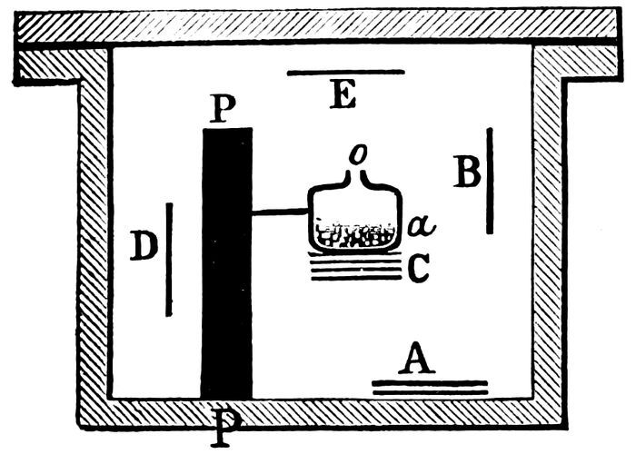
Certain substances become luminous when placed in an active enclosure (phosphorescent and fluorescent bodies, glass, paper, cotton, water, salt solutions). Phosphorescent zinc sulphide is particularly brilliant under the circumstances. The radio-activity of these luminous bodies is, however, the same as that of a piece of a metal or other body which is excited under the same conditions without becoming luminous.
Whatever be the substance made active in a closed vessel, this substance acquires an activity which increases with length of time until it attains a limiting value, always the same, for the same material and the same experimental arrangement.
The limit of induced radio-activity is independent of the nature and pressure of the gas inside the active enclosure (air, hydrogen, carbonic acid).
The limit of induced radio-activity for the same enclosure depends only on the quantity of radium present in the state of solution, and is apparently proportional to it.
6.2 Part played by Gases in the Phenomena of Induced Radio-activity¶
Emanation.—The gases present in an enclosure containing a solid salt or a solution of a salt of radium are radio-active. This radio-activity persists when the gas is drawn off with a tube and collected in a test-tube. The sides of the test-tube become themselves radio-active, and the glass of the test-tube is luminous in the dark. The activity and luminosity of the test-tube finally completely disappear, but very gradually, and a month afterwards radio-activity may still be detected.
Since the beginning of our researches, M. Curie and I have, by heating pitchblende, extracted a strongly radio-active gas, but, as in the preceding experiment, the activity of this gas finally completely vanished.
We could discern no new ray in the spectrum of this gas; this was therefore not a case of a new radio-active gas, and we understood later that it was the phenomenon of induced radio-activity.
Thus, for thorium, radium, and actinium induced radio-activity is progressively propagated through the gases, from the radiating body to the walls of the enclosure containing it, and the exciting principle is carried away with the gas itself, when the latter is extracted from the enclosure.
When the radio-activity of radium compounds is measured by the electrical method by means of the apparatus of Fig. 1, the air between the plates is itself radio-active; however, on passing a current of air between the plates, there is no observable lowering of the intensity of the current, which proves that the radio-activity distributed in the space between the plates is of little account in comparison with that of the radium itself in the solid state.
It is quite otherwise with thorium. The irregularities which I observed in determining the radio-activity of the thorium compounds arose from the fact that at this point I was working with a condenser open to the air; the least air current caused a considerable change in the intensity of the current, because the radio-activity dispersed in the space in the vicinity of the thorium is considerable as compared with the radio-activity of the substance.
This effect is still more marked in the case of actinium. A very active compound of actinium appears much less active when a current of air is passed over the substance.
The radio-active energy is therefore contained in the gas in a special form. Mr. Rutherford suggests that radio-active bodies generate an emanation or gaseous material which carries the radio-activity. In the opinion of M. Curie and myself, the generation of a gas by radium is a supposition which is not so far justified. We consider the emanation as radio-active energy stored up in the gas in a form hitherto unknown.
6.3 Dissipation in Free Air of the Induced Activity of Solid Bodies¶
A solid body, which has been excited by radium in an enclosed space for a sufficient length of time, and which has then been removed from the enclosure, parts with its activity in free air according to an exponential law, which is the same for all bodies represented by the following formula:—
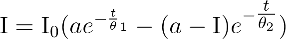
I0 being the initial intensity of the radiation at the moment of withdrawing the plate from the enclosure; I, the intensity after time, t; a is a numerical coefficient, a = 4·20; θ1 and θ2 are time constants, θ1 = 2420 secs., θ2 = 1860 secs. After two or three hours this law becomes practically a simple exponential, and the effect of the second exponential upon the value of I is negligible. The law of dissipation is therefore such that the intensity of radiation becomes diminished to one-half its value in twenty-eight minutes. This final law may be considered as characteristic for the dissipation in an unconfined air space of the activity induced in solid bodies by radium.
Solid bodies excited by actinium lose their activity in the open air, according to an exponential law similar to the preceding, the dissipation being, however, rather slower.
Solid bodies, made active by thorium, lose their activity much more slowly; the intensity of the radiation is reduced to one-half in eleven hours.
6.4 Dissipation of Activity in a Confined Space. Velocity of Destruction of the Emanation¶
An enclosure, made active by radium and then removed from its influence, loses its activity by a law which is much less rapid than that of dissipation in the open air. The experiment may be carried out with a glass tube, rendered active internally by placing it for some time in contact with a solution of a salt of radium. The tube is then sealed in the flame, and the intensity of radiation emitted by the walls of the tube is measured while the dissipation takes place.
The law of dissipation is an exponential law. It is given very accurately by the formula.
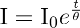
I0
= initial intensity of radiation.
I
= intensity of radiation at time, t.
θ
= a time constant, θ = 4·970 × 105 secs.
The intensity of the radiation is reduced to one-half in four days.
This law of dissipation is absolutely invariable whatever be the experimental conditions (dimensions of enclosure, nature of the walls, nature of the gas within the enclosure, duration of action, &c.). The law of dissipation remains the same for any temperature between –180° and +450°. The law is therefore altogether characteristic.
In these experiments it is the radio-active energy accumulated in the gas that maintains the activity of the walls. If the gas be withdrawn and a vacuum caused in the enclosure, we have found that dissipation of activity at once occurs in the rapid method; the intensity of radiation being reduced to one-half in twenty-eight minutes. The same result is obtained when ordinary air is substituted for the active air in the enclosure.
The law of dissipation with reduction of intensity of radiation to one-half in four days, is therefore characteristic of the disappearance of radio-active energy accumulated in the gas. By making use of the expression adopted by Mr. Rutherford, the emanation from radium may be said to disappear spontaneously as a function of the time, with reduction to one-half in four days.
The emanation from thorium is of another kind, and disappears much more rapidly. The intensity of radiation diminishes to one-half in about one minute ten seconds.
The emanation from actinium disappears still more rapidly; reduction to one-half takes place in a few seconds.
6.5 Variation of Activity of Liquids rendered Active and of Radium Solutions¶
Any liquid whatever becomes radio-active when placed in an active confined space. On being removed and left freely exposed to the air, the liquid rapidly loses its activity, imparting it to the gas and solid bodies surrounding it. If a liquid thus made active be placed in a closed flask, it loses its activity much more slowly; the latter being reduced in intensity to one-half in four days, just as would a gas under similar circumstances. This fact may be explained by assuming that the radio-active energy is stored in liquids in exactly the same form as in gases (in the form of an emanation).
A solution of a radium salt behaves in a somewhat similar manner. At first, it is a remarkable fact that the solution of a radium salt placed for some time in a confined space is no more active than pure water placed in a vessel in the same enclosure, when the equilibrium of activity is established. If the radium solution be removed from the enclosure and left standing in the air in a wide-necked vessel, the activity spreads itself into space, and the solution becomes nearly inactive, though still containing radium. If this solution be now enclosed in a stoppered flask, it gradually regains, in about a fortnight, a maximum of activity, which may be considerable. On the other hand, a liquid made active, but not containing radium, does not regain its activity in a closed flask after having been exposed to the atmosphere.
6.6 Theory of Radio-activity¶
The following is, according to MM. Curie and Debierne, a very general theory which allows of the co-ordination of the results of the investigation of induced radio-activity, which results I have just stated, and which constitute facts apart from any hypothesis.
It may be said that each atom of radium acts as a constant and continuous source of energy, without actually defining the origin of this energy. The radio-active energy which accumulates in the radium tends to become dissipated in two different ways:—(1) By radiation (rays both charged and uncharged with electricity); (2) by conduction, i.e., by gradual transmission to surrounding bodies in a medium of gases and liquids (production of an emanation and transformation into induced radio-activity).
The loss of radio-active energy, both by radiation and by conduction, increases with the amount of energy accumulated in the radio-active body. The system is necessarily in equilibrium when the double loss of which I have just made mention compensates the constant gain due to the action of radium. This manner of regarding the subject is similar to that in use for calorific phenomena. If in the interior of any body there is, owing to any cause, a continuous and constant evolution of heat, the heat accumulates in the body and the temperature rises until the loss of heat by radiation and conduction is in equilibrium with the constant gain of heat.
In general, except under certain special circumstances, the activity is not propagated through solid bodies. When a solution is kept in a sealed tube, the loss by radiation alone takes place, and the radiating activity of the solution is of a higher degree.
If, on the contrary, the solution stands in an open vessel, the loss of activity by conduction becomes considerable, and when the state of equilibrium is attained, the radiating activity of the solution is very feeble.
The radiating activity of a solid radium salt left exposed to the air does not sensibly diminish, because the propagation of activity by conduction not taking place through solid bodies, it is a very thin superficial layer only that produces induced radio-activity. The solution, however, of the same salt produces much more intense phenomena of induced radio-activity. With a solid salt the radio-active energy accumulates in the salt, and is dissipated chiefly by radiation. On the other hand, when the salt has been for several days in aqueous solution, the radio-active energy is divided between the salt and the water, and if separated by distillation the water carries with it a large portion of the activity, and the solid salt is much less active (ten or fifteen times) than before solution. Afterwards the solid salt gradually regains its original activity.
The preceding theory may be yet further defined by supposing the radio-activity of radium itself to be produced through the medium of the radio-active energy emitted in the form of an emanation.
Each atom of radium may be considered as a constant and continuous source of emanation. At the same moment that this form of energy is produced, it undergoes a progressive transformation into radio-active energy of the Becquerel radiation. The velocity of this transformation is proportional to the quantity of the emanation accumulated.
When a radium solution is placed within an enclosure, the emanation is able to expand into the enclosure and to spread out over the walls. Here it is, therefore, that it is transformed into a radiation, the solution giving off but few Becquerel rays; the radiation is, in some sort, externalised. On the other hand, with solid radium, the emanation not being able to escape readily, accumulates, and is transformed into the Becquerel radiation on the spot; this radiation therefore acquires a higher value.
If this theory of radio-activity were general, we should have to say that all radio-active bodies give rise to an emanation. Now this emission has been confirmed in the case of radium, thorium, and actinium; with the latter in particular the emission is enormous, even in the solid state. Uranium and polonium do not seem to emit any emanation, though they generate Becquerel rays. These bodies produce no induced radio-activity in an enclosed space, as do the radio-active bodies mentioned before. This fact is not in absolute contradiction to the preceding theory. If uranium and polonium were to emit emanations which become destroyed with very great rapidity, it would be very difficult to observe the carriage of such emanations by the air and the effects of induced radio-activity produced by them upon neighbouring bodies. Such a hypothesis is not improbable, since the times required for certain quantities of the emanations of radium and thorium to diminish to one-half are in the proportion of 5000 to 1. We shall see, moreover, that, under certain conditions, uranium can excite induced activity.
6.7 Another Form of Induced Radio-activity¶
According to the law of dissipation in the open air of the activity induced by radium in solid bodies, the activity after one day is almost imperceptible.
Certain bodies, however, form exceptions; such are celluloid, paraffin, caoutchouc, &c. When these bodies have been acted upon to a sufficient degree, they lose their activity more slowly than the law can account for, and it is often fifteen or twenty days before the activity becomes imperceptible. These bodies appear to have the property of becoming charged with radio-active energy in the form of an emanation; they afterwards lose it gradually, causing induced radio-activity in the vicinity.
6.8 Induced Radio-activity with Slow Dissipation¶
There is yet another form of induced radio-activity, which appears to be produced in all bodies which have been kept for months in an active enclosure. When these bodies are removed from the enclosure their activity at first diminishes to a very low value according to the ordinary law (diminution to one-half in half-an-hour); but when the activity has fallen to about 1/20,000 of the initial value, it diminishes no further, or at least it is dissipated very slowly, sometimes even increasing in amount. We have sheets of copper, aluminium, and glass which still retain a residual activity after six months.
These phenomena of induced radio-activity appear to be of a different kind from the ordinary ones, and show a much slower process of evolution.
A considerable time is also necessary both for the production and dissipation of this form of induced radio-activity.
6.9 Radio-activity Induced upon Substances in Solution with Radium¶
When a radio-active ore containing radium is treated, with the object of extracting the radium, chemical separations are effected, after which the radio-activity is confined entirely to one of the products. In this way active products, which may be several hundred times as active as uranium, are separated from totally inactive products, such as copper, antimony, arsenic, &c. Certain other bodies (iron, lead) were never separated in an entirely inactive state. As these active bodies are concentrated, the case is no longer the same; each chemical separation no longer furnishes absolutely inactive products; all the resulting products of a separation are active in varying degrees.
After the discovery of induced radio-activity, M. Giesel was the first to attempt to excite activity in ordinary inactive bismuth by keeping it in solution with very active radium. He thus obtained radio-active bismuth, and from this he concluded that the polonium extracted from pitchblende was probably bismuth made active by the vicinity of the radium contained in the pitchblende.
I have also prepared active bismuth by keeping bismuth in solution with a very active radium salt.
The difficulties of this experiment consist in the extreme precautions which must be taken to remove all traces of radium from the solution. If we realise what an infinitesimal quantity of radium suffices to produce very considerable radio-activity in 1 grm. of material, it is difficult to believe in the possibility of sufficiently washing and purifying the active product. Each purification causes a diminution of activity of the product, whether this be due to removal of traces of radium or that the induced radio-activity is, under these circumstances, not proof against chemical reactions.
The results I obtained appear, however, to establish with certainty the fact that the activity is produced and persists after the radium is removed. On fractionating the nitrate of my active bismuth by precipitation with water from the nitric acid solution, I found that after careful purifying it fractionated like polonium, the most active portion being precipitated first.
If the purification is not complete the opposite occurs, showing that traces of radium still remain. I thus obtained active bismuth which from the manner of fractionation showed great purity and which was 2000 times as active as uranium. This bismuth diminishes in activity with lapse of time. But another portion of the same product, prepared with the same precautions, and fractionating in the same manner, preserves its activity without diminution for actually a period of about three years.
This activity is 150 times as great as that of uranium.
I have also prepared active lead and silver by leaving them in solution with radium. Generally induced radio-activity obtained in this way scarcely lessens with lapse of time, but it does not as a rule withstand many successive chemical changes of the active body.
M. Debierne made active barium by placing it in solution with actinium. This barium remains active after several chemical reactions, its activity being therefore a somewhat stable atomic property. Active barium chloride fractionates like barium-radium chloride, the more active portions being the least soluble in water and dilute hydrochloric acid. The dry chloride is spontaneously luminous: its Becquerel radiation is similar to that of barium-radium chloride. M. Debierne has prepared an active barium chloride 1000 times as active as uranium. This barium, however, had not acquired all the characteristics of radium, for it showed none of the strongest radium lines in the spectroscope. Further, its activity diminished on standing, and after three weeks it had become one-third of its original value.
There is a wide field for research upon the radio-activity induced in substances in solution with active bodies. It appears that, according to the conditions of experiment, more or less stable forms of induced atomic radio-activity may be obtained. The radio-activity induced under these circumstances is perhaps identical with that form, which dissipates slowly, obtained by prolonged exposure at a distance in an active enclosure. We have reason to enquire to what degree induced radio-activity affects the chemical nature of the atom, and if it is able to modify the chemical properties of the latter, either temporarily or permanently.
The chemical investigation of bodies excited at a distance is rendered difficult by the fact that the induced activity is limited to a very thin superficial layer, and that, consequently, only a very small proportion of the material has been affected.
Induced radio-activity also results from leaving certain substances in solution with uranium. The experiment succeeded in the case of barium. If, as was done by M. Debierne, sulphuric acid be added to a solution containing uranium and barium, the precipitate of barium sulphate acquires radio-activity, and, at the same time, the uranium salt loses part of its activity. M. Becquerel found, after repeating this experiment several times, that almost inactive uranium was obtained. This might lead to the opinion that a radio-active body differing from uranium had been separated from the latter, its presence producing radio-activity in uranium. This, however, is not the case, for after some months the uranium regains its original activity; the precipitated barium sulphate, on the contrary, loses what it acquired.
A similar phenomenon is observed with thorium. Mr. Rutherford precipitated a solution of a salt of thorium with ammonia; he separated off the solution and evaporated it to dryness. He thus obtained a small very active residue, and the precipitated thorium was observed to be less active than before. This active residue, to which Mr. Rutherford gives the name of thorium X, loses its activity after a time, whilst the thorium regains its original activity.
It appears, then, that concerning induced radio-activity all bodies do not behave in a similar manner, and that certain of them are much more readily excited than others.
6.10 Dissemination of Radio-active Particles and Induced Radio-activity of the Laboratory¶
In making investigations of strongly radio-active bodies, particular precautions must be observed for obtaining delicate determinations. The different objects used in the chemical laboratory and those used for physical experiments soon acquire radio-activity, and act upon photographic plates through black paper. Dust particles, the air of the room, clothing, all become radio-active. The air of the room becomes a conductor. In our laboratory the evil has become acute, and we no longer have any apparatus properly insulated.
Special precautions must therefore be taken to avoid as much as possible the dissemination of active dust particles, and to avoid also the phenomena of induced activity.
The objects employed in chemistry should never be brought into the room where physical research is carried on, and as far as possible should be avoided any unnecessary keeping of active substances in this room. Before beginning our researches we were in the habit, in the case of electrical experiments, of making a connection between the different parts of the apparatus by insulated metallic wires, protected by metal cylinders connected to earth, which screened the wires from all outside electrical forces. In the investigation of radio-active bodies this arrangement is quite defective; the air being a conductor there is incomplete insulation between the thread and the cylinder, and the inevitable electromotive force of contact between the thread and the cylinder tends to produce a current through the air, and to cause a deflection of the electrometer. We now screen all the wires from the air by placing them inside cylinders filled with paraffin or other insulating material. It would also be advantageous in these investigations to make use of carefully enclosed electrometers.
6.11 Activity Induced Outside the Influence of Radio-active Substances¶
Attempts were made to produce induced radio-activity outside the action of radio-active bodies.
M. Villard subjected to the action of the cathode rays a piece of bismuth placed as anticathode in a Crookes tube; the bismuth was thus rendered active to a very slight degree, for it required an exposure of eight days to obtain a photographic impression.
Mr. MacLennan has exposed different salts to the action of cathode rays, afterwards warming them slightly. The salts then acquired the property of neutralising bodies positively charged.
Studies of this kind are of great interest. If, by using known physical agents, it were possible to create a considerable radio-activity in bodies originally inactive, we might hope thence to discover the cause of the spontaneous radio-activity of certain substances.
6.12 Variations of Activity of Radio-active Bodies. Effects of Solution¶
The activity of polonium, as I have said above, diminishes with time. This diminution is slow, and does not take place at the same rate with different specimens. A sample of bismuth-polonium nitrate lost half its activity in eleven months, and 95 per cent in thirty-three months. Other specimens have evidenced similar diminution.
A specimen of metallic bismuth containing polonium was prepared from the nitrite, its activity after preparation being 100,000 times that of uranium. The metal is now only a body of medium radio-activity (2000 times that of uranium). Its radio-activity is determined at intervals. In six months it has lost 67 per cent of its activity.
The loss of activity does not seem to be facilitated by chemical action. In rapid chemical changes no considerable loss of activity has in general taken place.
In contrast to that which occurs with polonium, radium salts possess a permanent radio-activity which evidences no appreciable diminution after many years.
A freshly prepared radium salt in the solid state does not at first possess an activity of constant strength. Its activity increases from the time of preparation until it attains a practically constant limiting value after about one month. The opposite is the case for a solution. When freshly prepared the solution is very active, but when left exposed to the air it rapidly loses activity, and finally reaches a limiting activity which may be considerably less than the original. These variations of activity were first observed by M. Giesel. They are easily accounted for by the emanation theory. The diminution of the activity of the solution corresponds to the loss of the emanation which escapes into space; this diminution is much less when the solution is contained in a sealed tube. A solution which has lost its activity in air recovers a greater activity in a sealed tube. The time of increase of the activity of the salt which, after solution, has been recently obtained in the solid state, is that during which the emanation is being newly stored in the solid radium.
The following are some experiments on this subject:—
A solution of barium-radium chloride left exposed to the air for two days becomes 300 times less active.
A solution is enclosed in a stoppered vessel; the vessel is opened, the solution poured into a dish, and the activity determined:—
| Activity immediately determined | 67 |
|---|---|
| Activity after two hours | 20 |
| Activity after two days | 0·25 |
A solution of barium-radium chloride, which has been kept open to the air, is enclosed in a sealed glass tube, and the radiation of this tube determined. The following results were observed:—
| Activity determined immediately | 27 |
|---|---|
| Activity determined after 2 days | 61 |
| Activity determined after 3 days | 70 |
| Activity determined after 4 days | 81 |
| Activity determined after 7 days | 100 |
| Activity determined after 11 days | 100 |
The initial activity of a solid salt after preparation is feeble in proportion as the time of solution was long. A greater proportion of activity is then transmitted to the solvent. The following figures give the initial activity with a chloride whose limiting activity is 800, and which was kept for a given time in solution; the salt was afterwards dried, and its activity immediately determined:—
| Limiting activity | 800 |
|---|---|
| Initial activity after solution and immediate evaporation | 440 |
| Initial activity after the salt has remained dissolved 5 days | 120 |
| Initial activity after the salt has remained dissolved 18 days | 130 |
| Initial activity after the salt has remained dissolved 32 days | 114 |
During this experiment the dissolved salt was placed in a vessel merely covered with a watch-glass.
I made with the same salt two solutions which I kept in sealed tubes for thirteen months; one of these solutions was eight times the strength of the other:—
| Initial activity of the salt in concentrated solution after evaporation | 200 |
|---|---|
| Initial activity of the salt in dilute solution after evaporation | 100 |
The loss of activity of the salt is therefore greater when the amount of solvent is greater, the radio-active energy transmitted to the liquid having a greater volume of liquid to saturate and a greater space to fill. The two specimens of the same salt, which thus had a different initial activity, further increased in activity at very different rates at first; at the end of one day they had the same activity, and the increase of activity now continued in the same manner for both till the limit was reached.
When the solution is dilute the loss of activity by the salt is very rapid, as is shown by the following experiments:—Three equal portions of the same radium salt are dissolved in equal quantities of water. The first solution (a) is allowed to stand in contact with the air for one hour, and is then evaporated. The second solution (b) has a current of air passed through it for one hour, and is then evaporated. The third solution (c) is left exposed to the air for thirteen days, and then evaporated to dryness. The initial activity of each of the three salts is:—
| For portion a | 145·2 |
|---|---|
| For portion b | 141·6 |
| For portion c | 102·6 |
The limiting activity of the same salt is about 470. We thus see that the greatest part of the effect was produced at the end of one hour. Further, the air current bubbling through solution b for one hour produced little effect. The proportion of salt in solution was about 0·5 per cent.
Radio-active energy in the form of an emanation is propagated with difficulty from solid radium in air; it experiences the same resistance to propagation from solid radium in a liquid. When radium sulphate is shaken with water for a whole day, its activity after the operation is practically the same as that of a portion of the same sulphate left exposed to air.
On placing the radium salt in a vacuum, all the emanation capable of displacement is withdrawn. However, the radio-activity of a radium chloride kept in vacuo for six days was not sensibly affected by the operation. This experiment shows that the radio-activity of the salt is principally due to the radio-active energy generated within the particles, and which is unaffected by the vacuum.
The loss of activity that radium undergoes when in solution is relatively greater for the penetrating rays than for the absorbable rays. The following are examples of this:—
A radium chloride which had reached its limit of activity, 470, was dissolved and left in solution for one hour; it was then evaporated, and its initial radio-activity determined by the electrical method. The total initial radiation was found to be equal to the fraction 0·3 of the total limiting radiation. If the determination of the intensity of radiation be made by covering the active body with an aluminium screen 0·01 m.m. thick, the initial radiation which traverses this screen is found to be only the fraction 0·17 of the limiting radiation traversing the same screen.
When the salt has been thirteen days in solution, the total initial radiation is found to be the fraction 0·22 of the total limiting radiation, and is 0·13 of the limiting radiation after traversing 0·01 m.m. of aluminium.
In the two cases the ratio of the initial radiation after solution to the limiting radiation is 1·7 times as great for the total radiation as for the radiation which has traversed 0·01 m.m. of aluminium.
It must further be mentioned that on evaporating the product after solution, it is impossible to avoid a certain period of time during which the product is in an intermediate condition, neither entirely solid nor entirely liquid. Neither can one avoid warming the product to remove the water quickly.
For these two reasons it is scarcely possible to determine the true initial activity of the product passing from solution to the solid state. In the experiments just quoted, equal quantities of the active bodies were dissolved in the same quantity of water, and the solutions were then evaporated to dryness under conditions as identical as possible, and without heating above 120° or 130°.
I investigated the law according to which the activity of a solid radium salt increases, from the moment in which the salt is obtained dry after solution to the moment in which it reaches its limit of activity. In the tables which follow, the intensity of radiation, I, is represented as a function of the time, the limiting intensity being supposed equal to 100, and the time being reckoned from the moment at which the product was dried. Table I. (Fig. 12, Curve I.) refers to the total radiation. Table II. (Fig. 12, Curve II.) refers only to the penetrating rays (rays which have traversed 3 c.m. of air and 0·01 m.m. of aluminium).
Table I. Table II.
Time. Days. I. Time. Days. I.
0 21 0 1·3
1 25 1 19
3 44 3 43
5 60 6 60
10 78 15 70
19 93 23 86
33 100 46 94
67 100
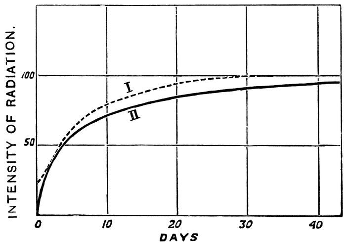
I made several other series of determinations of the same kind, but they do not absolutely agree with one another, although the general character of the curves obtained remains the same. It is difficult to obtain very regular results. It may, however, be remarked that the acquisition of activity requires more than one month for its production, and that the most penetrating rays are the most deeply affected by solution.
The initial intensity of the radiation which is able to traverse 3 c.m. of air and 0·01 m.m. of aluminium is only 1 per cent of the limiting intensity, whilst the initial intensity of the total radiation is 21 per cent of the total limiting radiation.
A radium salt which has been dissolved and recently evaporated to dryness possesses the same power of causing induced activity (and, consequently, of allowing the escape of an emanation), as a specimen of the same salt which, after having been prepared in the solid state, has remained in this condition long enough to have attained its limiting radio-activity. The radiant activity of these two products is, however, quite different; the former is, for example, five times less active than the latter.
6.13 Variations of the Activity of Radium Salts on Heating¶
When a radium compound is heated, it gives off an emanation and loses activity. The more intense and the more prolonged the heating, the greater is the loss of activity. Thus, on heating a radium salt for one hour to 130°, it loses 10 per cent of its total radiation; on the other hand, heating for ten minutes to 400° produces no apparent effect. Heating to redness for several hours destroys 77 per cent of the total radiation.
The loss of activity on heating is more considerable for the penetrating than for the absorbable rays. Thus, heating for several hours destroys about 77 per cent of the total radiation, but the same amount of heating destroys nearly the whole (99 per cent) of the radiation that traverses 3 c.m. of air and 0·01 m.m. of aluminium. If barium-radium chloride be kept fused for several hours (towards 800°) 98 per cent of the radiation capable of traversing 0·3 m.m. of aluminium is destroyed. The penetrating rays may be considered as no longer in existence after intense and prolonged heating.
When a radium salt has lost part of its activity by heating, the diminution is not lasting; the activity of the salt is spontaneously regenerated at the ordinary temperature, and approaches a certain limiting value. I have observed the curious fact that this limit is higher than the limiting activity of the salt before being heated—this, at least, is the case with the chloride. I give examples of this:—A specimen of barium-radium chloride which, after having been prepared in the solid state, has long since attained its limiting activity, possesses a total radiation represented by the number 470, and a radiation capable of traversing 0·01 m.m. of aluminium, represented by the number 157. This, specimen is heated to redness for several hours. Two months after the heating it attains its limit of activity with a total radiation equal to 690, and a radiation through 0·01 m.m. of aluminium, equal to 227. The total radiation and the radiation transmitted by aluminium are therefore increased respectively in the ratios 690
470 and 227
156. These two ratios are practically equal to one another, and are equivalent to 1·45.
A specimen of radium-barium chloride which, after having been prepared in the solid state, has attained a limiting activity of 62, is maintained in a state of fusion for some hours; the fused product is then powdered. The product regains a new limiting activity equal to 140, which is twice as great as that to which it was able to attain when prepared in the solid state without having been sensibly heated during evaporation.
I have investigated the law of increase of activity of radium compounds after heating. The following are the results of two series of determinations:—The figures of Table I. and II. represent the intensity of the radiation (I) as a function of time, the limiting intensity being supposed equal to 100, and the time being reckoned from the close of the heating. Table I. (Fig. 13, Curve I.) refers to the total radiation of a specimen of barium-radium chloride. Table II. (Fig. 13, Curve II.) relates to the penetrating radiation of a specimen of barium-radium sulphate, the intensity of the radiation which traversed 3 c.m. of air and 0·01 m.m. of aluminium having been determined. The two products were subjected to a bright red heat for seven hours.
Table I. Table II.
Time. Days. I. Time. Days. I.
0 16·2 0 0·8
0·6 25·4 0·7 13
1 27·4 1 18
2 38 1·9 26·4
3 46·3 6 46·2
4 54 10 55·5
6 67·5 14 64
10 84 18 71·8
24 95 27 81
57 100 36 91
50 95·5
57 99
84 100
I made several other series of determinations, but the results did not agree well.
The effect of heating does not persist when the heated radium compound is dissolved. Of two specimens of the same radium compound of activity 1800, one was strongly heated and its activity thereby reduced to 670. The two portions being now dissolved and left in solution for twenty hours, their initial activities in the solid state were 460 for the not heated portion and 420 for the heated one; the difference between the two portions was therefore not considerable. But if the two products do not remain for a sufficient length of time in solution—if, for example, they are evaporated to dryness, immediately after solution—the not heated product is much more active than the heated one; a certain time is necessary in the dissolved state for the effects of heating to disappear. A product of activity 3200 was heated, and its activity thereby reduced to 1030. This product and a similar portion which had not been heated were simultaneously dissolved, and the two then immediately evaporated to dryness. The initial activity was 1450 for the not heated portion, and 760 for the heated one.
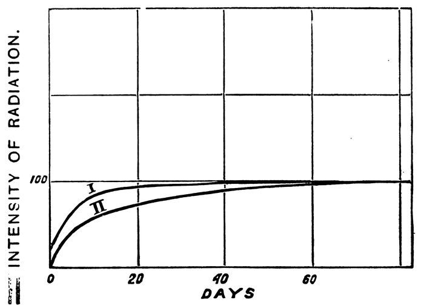
In the case of solid radium salts the capacity for exciting induced radio-activity is largely affected by heating. During heating radium compounds give off a larger amount of emanation than at the ordinary temperature; but on being cooled to the ordinary temperature, not only is their radio-activity much less than before heating, but their capacity for inducing activity is much diminished. During the time that follows the heating, the radio-activity of the product increases, and may even exceed the original value. The induction capacity is also partially re-established; however, after prolonged heating to redness, this capacity is almost entirely destroyed without spontaneous re-appearance afterwards. The induction capacity may be restored to the radium salt by dissolving it in water, and drying it in the oven at a temperature of 120°. This seems to have the effect of leaving the salt in a peculiar physical condition, in which the emanation is given off with much less facility than is the case with the same solid product not heated to a high temperature, and it follows naturally that the salt attains a higher limit of activity than that which it possessed before heating. To transform the salts into the physical condition proper to it before heating, it suffices to dissolve it and to evaporate it to dryness without heating it above 150°.
The following are numerical examples of the above:—
I represent by a the limit of induced activity produced in a closed vessel upon a plate of copper by a specimen of barium-radium carbonate of activity 1600.
Suppose a = 100 for the not heated product. We find—
| 1 day after heating | a = 3·3 |
|---|---|
| 4 days after heating | a = 7·1 |
| 10 days after heating | a = 15 |
| 20 days after heating | a = 15 |
| 37 days after heating | a = 15 |
The radio-activity of the product had diminished 90 per cent by heating, but one month afterwards the original value was regained.
The following is an experiment of the same kind made with a barium-radium chloride of activity 3000. The induction capacity is determined in the same manner as before.
For the product not heated a = 100.
Induction capacity of the product after being heated to redness for three hours:—
| 2 days after heating | 2·3 |
|---|---|
| 5 days after heating | 7·0 |
| 11 days after heating | 8·2 |
| 18 days after heating | 8·2 |
| Induction capacity of the unheated substance which has been dissolved and then dried at 150° | 92 |
| Induction capacity of the heated substance which has been dissolved and then dried at 150° | 105 |
6.14 Theory of Interpretation of the Causes of Variations of Activity of Radium Salts after Solution and after Heating¶
The facts previously indicated may be in part explained by the theory according to which the energy of radium is produced in the form of an emanation, which is then transformed into the energy of radiation. When a radium salt is dissolved, the emanation produced by it spreads beyond the solution, and causes radio-activity outside the source from which it proceeds; when the solution is evaporated, the solid salt obtained is but slightly active, because it contains only a small amount of emanation. Gradually the emanation is accumulated in the salt, the activity of which rises to a limiting value, which is reached when the production of the emanation by the radium compensates the loss by external emission and by local transformation into Becquerel rays.
When a radium salt is heated, the external emission of the emanation is greatly increased, and the phenomena of induced radio-activity are more intense than when the salt is at the ordinary temperature. But when the salt returns to the ordinary temperature it is exhausted, as is the case after being dissolved, and contains but a small amount of emanation, its activity having become greatly reduced. Gradually the emanation accumulates afresh in the solid salt, and the radiation increases.
It may be said that radium gives rise to a constant generation of any emanation—part of which escapes to the exterior, the remainder being transformed in the radium itself into Becquerel rays. When radium is raised to a red heat, it loses the greater part of its capacity to cause the induction of activity; otherwise stated, the evolution of the emanation is lessened. Consequently, the proportion of the emanation utilised in the radium itself should be greater, and the substance attains a higher limit of radio-activity.
We will endeavour to establish theoretically the law of rise of activity of a solid radium salt which has been dissolved or has been heated. We will assume that the intensity of radiation of radium is, at each instant, proportional to the quantity of emanation, q, present in the radium. We know that the emanation is spontaneously destroyed according to a law such that, at each instant—
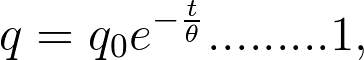
q0 being the amount of the emanation at the moment of starting the observation, and θ the time constant, equal to 4·97 × 105 secs.
Now let Δ be the evolution of the emanation by radium, a quantity which I will assume constant. Let us consider what would occur if no emanation were escaping to the exterior. The emanation generated would then be completely utilised by the radium for the production of the radiation. We have from Formula 1—
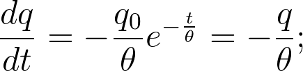
and consequently, in the state of equilibrium, the radium would contain a certain quantity of emanation, Q, such that—
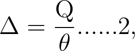
and the radiation of the radium would then be proportional to Q.
Let us suppose the radium placed in the circumstances under which it gives off the emanation to the exterior; this is obtained by dissolving the radium compound or by heating it. The equilibrium will be disturbed, and the activity of the radium diminished. But as soon as the cause of the loss of emanation has been abolished (the body being restored to the solid state or the heating having ceased), the emanation is accumulated afresh in the radium and we have a period during which the evolution, Δ, surpasses the velocity of destruction, q/θ. We then have—
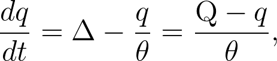
from which—
(d/dt)(Q – q) = –(Q – q)/θ,
Q – q = (Q – q0)e–t/θ 3,
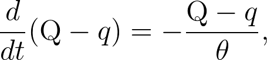
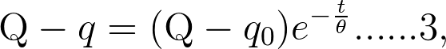
q0 being the amount of emanation present in the radium at time t = 0.
According to Formula 3, the excess of the quantity of emanation, Q, contained by the radium in a state of equilibrium above the quantity, q, contained at a given moment, decreases as a function of the time according to an exponential law, which is also the law of the spontaneous disappearance of the emanation. The radiation of radium being proportional to the amount of emanation, the excess of the intensity of the limiting radiation above the actual intensity should decrease as a function of the time by the same law; the excess should thus diminish to one-half in about four days.
The preceding theory is incomplete, since the loss of emanation to the exterior has been neglected. It is also difficult to determine the manner in which this acts as a function of the time. In comparing the results of experiment with those of this incomplete theory, there is found to be no satisfactory agreement; the conviction is, however, retained that the theory in question is partially true. The law by which the excess of limiting activity above the actual activity diminishes to one-half in four days represents approximately the course of the renewal of activity after heating for ten days. In the case of the renewal of activity after solution, the same law appears to hold approximately for a certain period of time, which begins two or three days after evaporation to dryness and continues for ten or fifteen days. The phenomena are otherwise complex; the theory sketched out does not explain the reason of the suppression of the penetrating rays in greater proportion than the absorbable rays.
6.15 Nature and Cause of the Phenomena of Radio-activity¶
From the beginning of research upon the radio-active bodies, and when the properties of these bodies were yet hardly known, the spontaneity of their radiation presented itself as a problem having the greatest interest for physicists. To-day we have advanced considerably in the understanding of radio-active bodies, and are able to isolate one of very great power, viz., radium. With the object of making use of the remarkable properties of radium, a profound investigation of the rays emitted by radio-active bodies is indispensable; the various groups of rays under investigation present points of similarity with the groups of rays existing in Crookes tubes: cathode rays, Röntgen rays, canal rays. The same groups of rays are found in the secondary radiation produced by Röntgen rays, and in the radiation of bodies which have acquired radio-activity by induction.
But if the nature of the radiation is actually better known, the cause of this spontaneous radiation remains a mystery, and the phenomena always presents itself to us as a profound and wonderful enigma.
The spontaneously radio-active bodies, and in the first place radium, are sources of energy. The evolution of energy, to which they give rise, is manifested by Becquerel radiation, by chemical and luminous effects, and by the continuous generation of heat.
The question often arises as to whether energy is created within the radio-active bodies themselves, or whether it is borrowed by them from external sources. No one of the numerous hypotheses arising from these two points of view has yet received experimental confirmation.
The radio-active energy may be assumed to have been initially accumulated and then gradually dissipated, as happens in the case of long continued phosphorescence. We imagine the evolution of radio-active energy to correspond to a transformation of the nature of the atom of the active body; the fact of the continuous generation of heat by radium speaks in favour of this hypothesis. The transformation may be assumed to be accompanied by a loss of weight and by an emission of material particles constituting the radiation. The source of energy may yet be sought in the energy of gravitation. Finally, we may imagine that space is constantly traversed by radiations yet unknown, which are arrested in their course by radio-active bodies and transformed into radio-active energy.
Many reasons are adduced for and against these different views, and most often attempts at experimental verifications of the conclusions drawn from these hypotheses have given negative results. The radio-active energy of uranium and radium apparently neither becomes exhausted nor varies appreciably with lapse of time. Demarçay examined spectroscopically a specimen of pure radium chloride after a five months’ interval, and observed no change in the spectrum. The principal barium line, which was visible in the spectrum indicating the presence of a trace of barium, had not increased in intensity during the interval, showing therefore that there was no transformation of radium into barium to an appreciable extent.
The variations of weight announced by M. Heydweiller in radium compounds cannot yet be looked upon as established facts.
Elster and Geitel found that the radio-activity of uranium is not affected at the bottom of a mine-shaft 850 m. deep; a layer of earth of this thickness would therefore not affect the hypothetical primary radiation which would be excited by the radio-activity of uranium.
We have determined the radio-activity of uranium at midday and at midnight, thinking that if the hypothetical primary radiation had its origin in the sun it would be partly absorbed in traversing the earth. The experiment showed no difference in the two determinations.
6.16 Conclusions¶
I will define, in conclusion, the part I have personally taken in the researches upon radio-active bodies.
I have investigated the radio-activity of uranium compounds. I have examined other bodies for the existence of radio-activity, and found the property to be possessed by thorium compounds. I have made clear the atomic character of the radio-activity of the compounds of uranium and thorium.
I have conducted a research upon radio-active substances other than uranium and thorium. To this end I investigated a large number of substances by an accurate electrometric method, and I discovered that certain minerals possess activity which is not to be accounted for by their content of uranium and thorium.
From this I concluded that these minerals must contain a radio-active body different from uranium and thorium, and more strongly radio-active than the latter metals.
In conjunction with M. Curie, and subsequently with MM. Curie and Bémont, I was able to extract from pitchblende two strongly radio-active bodies—polonium and radium.
I have been continuously engaged upon the chemical examination and preparation of these substances. I effected the fractionations necessary to the concentration of radium, and I succeeded in isolating pure radium chloride. Concurrently with this work, I made several atomic weight determinations with a very small quantity of material, and was finally able to determine the atomic weight of radium with a very fair degree of accuracy. The work has proved that radium is a new chemical element. Thus the new method of investigating new chemical elements, established by M. Curie and myself, based upon radio-activity, is fully justified.
I have investigated the law of absorption of polonium rays, and of the absorbable rays of radium, and have demonstrated that this law of absorption is peculiar and different from the known laws of other radiations.
I have investigated the variation of activity of radium salts, the effect of solution and of heating, and the renewal of activity with time, after solution or after heating.
In conjunction with M. Curie, I have examined different effects produced by the new radio-active substances (electric, photographic, fluorescent, luminous colourations, &c.).
In conjunction with M. Curie, I have established the fact that radium gives rise to rays charged with negative electricity.
Our researches upon the new radio-active bodies have given rise to a scientific movement, and have been the starting-point of numerous researches in connection with new radio-active substances, and with the investigation of the radiation of the known radio-active bodies.
RADIUM
AND OTHER
RADIO-ACTIVE ELEMENTS.
A Popular account of Radium and other Radio-active Elements treated experimentally.
Including a number of Radium Photographs and other Illustrations.
By LEONARD A. LEVY and HERBERT G. WILLIS.
PRICE 2s. 6d. net; post free 2s. 9d.
CONTENTS.
Introduction.—Chap. I. The Discovery of Radium; its Extraction.—Chap. II. The Radium Emanation.—Chap. III. Physical Effects (Electrical and Magnetic).—Chap. IV. Physical Effects (continued).—Chap. V. Chemical Effects.—Chap. VI. Actions on Animal Life and Living Tissues.—Chap. VII. Other Radio-active Elements.—Appendix.—Experimental Apparatus.
PERCIVAL MARSHALL & CO.,
26–29, POPPIN’S COURT, FLEET STREET, LONDON, E.C.
RADIUM
SPINTHARISCOPES.
AS DESIGNED BY
SIR WILLIAM CROOKES, F.R.S.,
For Demonstrating the Radio-activity of Radium.
KUNZITE.
THE NEW MINERAL.
Responding in a high degree to the Emanations from Radium.
ZINC SULPHIDE SCREENS.
CALCIUM SULPHIDE—Phosphorescent.
ZINC SULPHIDE—Phosphorescent.
PITCHBLENDE—Specimens.
Write for particulars to
JOHN J. GRIFFIN & SONS, Ltd.,
20, 22, 24, 26, SARDINIA STREET, LONDON, W.C.
RADIUM APPLICATORS
Its employment in Therapeutics
and for scientific research.
(MacLeod) Surface, each 7s. 6d. Throat, £1 1s.
BARIUM PLATINOCYANIDE SCREENS, per sq. inch, 9d.
CALCIUM SULPHIDE, luminous, per lb., 8/-
KUNZITE, per Gm., 1/-
POLONIUM, ON BISMUTH & COPPER DISCS, each 25/-
PITCHBLENDE, specimens, each, per oz., 2/6.
URANIUM NITRATE, oz., 1/-.
THORIUM HYDROXIDE, oz., 4/-; lb., 48/-.
THORIUM HYDROXIDE PADS, each 10/6.
WILLEMITE, Natural Specimens, 2/- each.
WILLEMITE, Artificial Specimens, 1/- each.
ZINC SULPHIDE, Active, Gm. 1/6.
ZINC SULPHIDE SCREENS, 10 × 10 centimetres, each 7/6.
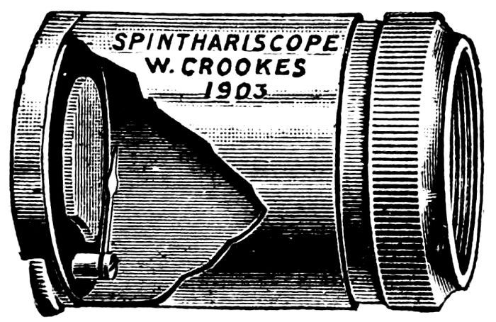
Special Quotations for Quantity.
CHEMICALS AND APPARATUS
for Scientific Research. (Write for Price List.)
SPINTHARISCOPES
showing the Scintillations of Radium,
21/-
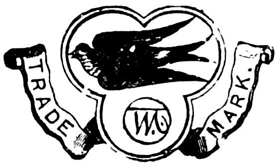
W. MARTINDALE, Manufacturing Chemist,
10 NEW CAVENDISH STREET, W.
Telegraphic Address: “Martindale, Chemist, London.”
Telephone: 1797 Paddington.
RADIUM
ON SALE AND LET ON HIRE.—Write for Terms.
The following can be had by return of post.
Pitchblende, direct from Joachimsthal, very radio-active, from 1/- to 30/- per piece.
Itacolomite, or flexible sandstone, 10/- to 25/- per piece (very rare).
Kunzite, 1/- per gramme. Selected, clear, 2/-
Sparteite (see Nature, 31 3/04, fol. 523), 2/- and upwards.
Chlorophane, 2/- and upwards. Barium Platino Cyanide in large Crystals in course of manufacture. (Orders Booked).
Zinc Sulphide. Phosphorescing a beautiful Green, 2/6 per tube.
Zinc Sulphide. Phosphorescing a beautiful Yellow, 2/6 per tube.
Calcium Sulphide Phosphorescing a beautiful Violet, 1/- per tube.
Radio-active Residue from which Radium is made; very scarce, 2/- tube.
Polonium Sulphide, in tubes of one gramme, 21/-
Polonium on Bismuth Rod or Disc, 25/-
Polonium on Copper Rod or Disc, 25/-
Radio-active Screens (Willemite), 6d. per sq. inch. Plat. Bar. Cyan Screen., 9d. sq. inch
Radio-active Screens (Zinc Sulph.), 10 × 10 cm. 7/6.
Professional Men, Universities, Schools, &c., allowed special terms.
Our newly invented Thorium Inhalers may be had on hire.
ARMBRECHT, NELSON & CO.,
71 & 73, Duke Street, Grosvenor Square, London, W.
Telephone: Gerrard 4942.
N.B.—We have to-day received a consignment of the New Zealand Vegetable Caterpillar; it is from 2 to 3 inches long, with a stem showing fructification growing out of its head. Scientific name of the insect is Hepialus virescens; the name of the fungus is Sphaeria Robertsiana. Specimens may be had from 10/6 to 21/-, according to quality and size.
TERMS CASH WITH ORDER.
Goods may be returned if not approved of, when money will be refunded.